Page 1 / 1171
第60章 脊椎动物的发育
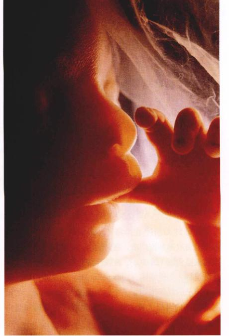
图 60.1 发育是决定有机体结构与功能的过程。人的胚胎在母体内的发育时间为38周（大约9个月），18周的胎儿，虽然还不及胚胎发育一半的时间，但是他已经有了许多明显的行为，比如吮吸反射，这对分娩之后的生存是十分重要的。
除个别的物种之外，对于大多数脊椎动物来讲，生殖过程意味着2个单倍体配子结合形成1个二倍体的细胞，即合子。合子经过细胞分裂，最终分化成一个由许多不同类型的组织和器官组成的多细胞有机体。尽管发育是一系列的连续事件，而且不同的脊椎动物类群也存在一些细节差异，但我们仍然可以把它分为6个阶段。本章我们将考察发育的各个阶段，并对人的发育过程中的事件进行描述与分析（图 60.1）。
Page 2 / 1172
60.1 受精是发育过程中的第一个重要事件
60.1.1 受精的过程
与所有进行有性生殖的动物一样，脊椎动物发育的第一个事件就是雌雄配子的结合，即受精（fertilization）作用。鱼类和两栖类是典型的体外受精方式，在水中完成生殖过程，而其他的脊椎动物则多采取体内受精的方式。在体内受精过程中，很小的、能运动的精子在交配过程中进入雌性生殖道内。精子沿着雌性生殖道向上游动，直到在输卵管中遇到一个成熟的卵子或一个次级卵母细胞为止。受精过程包括3个阶段：穿透、激活和核融合。
1) 精子穿透（penetration）
如第59章所述，在排卵（ovulation）期，一个次级卵母细胞由成熟卵泡排出。在卵泡内，它被同一层的小型颗粒细胞包围（图 60.2）。在颗粒细胞和卵细胞质膜之间有一层称之为透明带（zona pellucida）的糖蛋白层。每一个精子的头部都罩着一个称为顶体（acrosome）的细胞器，其内含有大量的糖蛋白水解酶（糖昔酶和蛋白酶）。在精子开始穿过颗粒细胞层时，这些水解酶被释放出来，其作用是使精子穿过透明带，形成一个通道，并最终到达卵细胞的质膜。海胆卵子的细胞质在精子进入处凸起，并把精子的头部全部吞入，使精子的核进入卵细胞的细胞质中（图 60.3）。
2) 卵子激活
由精子穿透过程而引发的一系列连续的事件，可以统称为卵子的激活（egg activation）。在有些蛙类、爬行类和鸟类中，可以有不止一个精子完成穿透过程，但只有一个可以成功受精；而对于哺乳动物来说，与上面的情况则完全不同：首先，精子穿透之后会马上引起卵膜性质的改变，从而阻止其他精子的进入。其次，精子和卵细胞接触之后，卵子质膜的膜电位将发生改变（见第54章中有关膜电位的讨论），从而阻止其他精子与卵细胞的细胞膜相接触、融合。
除去以上已经讨论的变化之外，精子的穿透作用对于卵细胞还有其他3个方面的影响：第一，对哺乳动物，精子穿透可以刺激次级卵母细胞核中的染色体完成第二次减数分裂，形成2个单倍体的细胞核。其中一个以第二极体的形式被排出（见第59章），留下一个单倍体的。
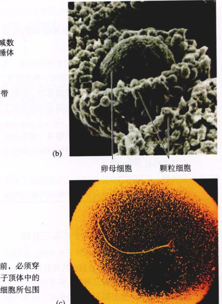
图 60.2 哺乳动物的生殖细胞 (a) 一个精子在到达卵细胞的质膜之前，必须穿过颗粒细胞层和一个称为透明带的糖蛋白层。这个穿透作用借助于精子顶体中的水解酶。扫描电镜照片显示：(b) 人的卵母细胞（90×）被无数的颗粒细胞所包围；(c) 附于卵细胞表面的人的精子。
Page 3 / 1173
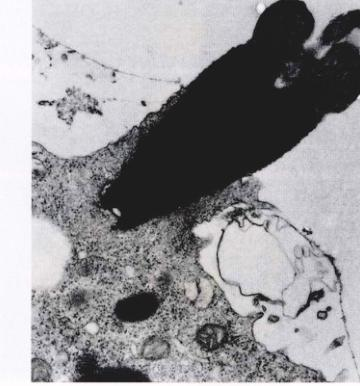
图 60.3 精子穿透海胆卵 (a) 穿透阶段。(b) 穿透过程的电镜照片，无脊椎动物和脊椎动物卵细胞的穿透过程是相似的。
核在原来卵细胞的胞质中。第二，在某些动物中，精子穿透会引发卵质绕精子进入点的移动。这种移动最终确立了发育中的动物体的两侧对称模式。以蛙类为例，精子进入后，引起卵质的外层色素向进入点方向移动。由于失去了外层色素，在进入点对侧的胞质就形成了一个灰色新月区（gray crescent）（图 60.4）。灰色新月区的位置决定了第一次细胞分裂的位置。如果在精子进入点和灰色新月区之间画一条线，将把未来的成体分为左右两侧。第三，卵子激活的特征是蛋白质合成量的急剧增加和代谢活动的加强。实验证明，在被激活的卵子内，编码这些蛋白质的mRNA在受精前就已产生，并已存在于未受精卵的胞质当中。
当然，对于某些脊椎动物来说，无需精子进入而只用针刺激质膜也可以使卵细胞激活。用这种方法激活的卵子可能会继续以孤雌生殖的方式发育。少数两栖类、鱼类和爬行类在自然界完全依赖于孤雌生殖的方式繁殖，如第59章所述。

图 60.4 蛙卵中灰色新月区的形成 灰色新月区出现在精子进入点的对侧。
3) 核融合
受精的第3个阶段是进入卵子的精子核与单倍体的卵子核融合在一起，形成一个二倍体的合子核。这个融合过程是由卵子激活所触发的。如果一个精子核经显微注射注入未激活的卵子内，那么两个单倍体核将不会发生融合。这种信号传递的本质，包括两个核之间互换的信号，或从一个核传递到另一个核的信号，还不为我们所知。
60.2 卵裂和囊胚的形成为后期的发育奠定了基础
60.2.1 卵裂的方式
受精作用之后，在脊椎动物有性生殖过程中的第二个重要事件就是合子快速分裂，从而形成数量越来越多、体积越来越小的细胞（图 60.6）。这个分裂期就称为卵裂（cleavage），其间胚胎的整个体积并不增加。结果便形成了一个由约32个细胞紧密排列的细胞团，称为桑葚胚（morula），桑葚胚中的每一个单独的细胞，称为卵裂球（blastomere）。随着卵裂球的继续分裂，它们向桑葚胚的...
Page 4 / 1174
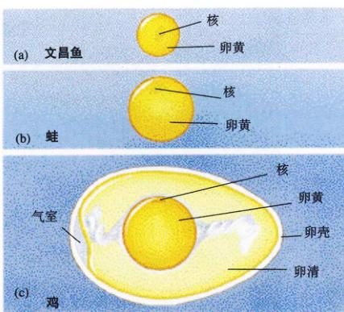
图 60.5 三种不同种类卵的卵黄分布 (a) 文昌鱼是一种原始的脊索类动物，卵由一个处于中央的核和包围在四周的极少量的卵黄组成。(b) 蛙卵中含有更多的卵黄，并且细胞核被挤向一极。(c) 鸟类卵的结构十分复杂，有一很大的中央卵黄，细胞核位于卵黄表面之下。
中央分泌一种液体。最后形成一个500~2000个细胞组成的中空的球体——囊胚（blastula）。囊胚内那个充满液体的腔，就称为囊胚腔（blastocoel）。
许多脊椎动物的卵中富含卵黄，卵裂的方式受卵黄存在及其在卵子中的位置的影响（图 60.5）。如前面的章节讨论的那样，脊椎动物有许许多多不同的有性生殖方式，相应地也就有许许多多不同的利用卵黄的方式。
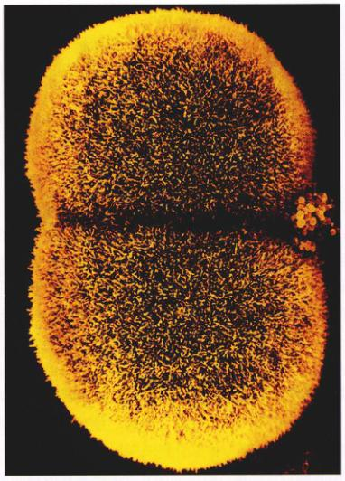
图 60.6 完全卵裂（3000×） 按照这种卵裂的模式，细胞分裂使受精卵完全分割。
1) 原始的脊索动物
当卵子含有少量或不含卵黄时，卵裂就贯穿整个受精卵（图 60.6）。这种卵裂的方式称为完全卵裂（holoblastic cleavage）。这种卵裂方式是脊椎动物祖先的特征，并且在头索类（文昌鱼）和无颌类中依然存在。对于这些动物来说，完全卵裂形成了一个由近乎大小相同的细胞组成的对称的囊胚。
2) 两栖类和高等鱼类
在硬骨鱼和蛙的卵中，其中一个半球的胞质卵黄的含量明显多于另一个半球。因为富含卵黄的细胞的分裂速度远远慢于那些几乎不含卵黄的细胞，所以，这种类型的卵进行完全卵裂的结果是，形成一个完全不对称的囊胚，较大的富含卵黄的细胞在一极，而一团几乎不含卵黄的小型细胞位于另一极。在这种囊胚中，富含卵黄的一极...

图 60.7 蛙卵的分裂 在这张照片中离我们最近的那些细胞（即动物极附近的细胞）分裂速度比那些靠近植物极的细胞快，但体积也小一些。
Page 5 / 1175
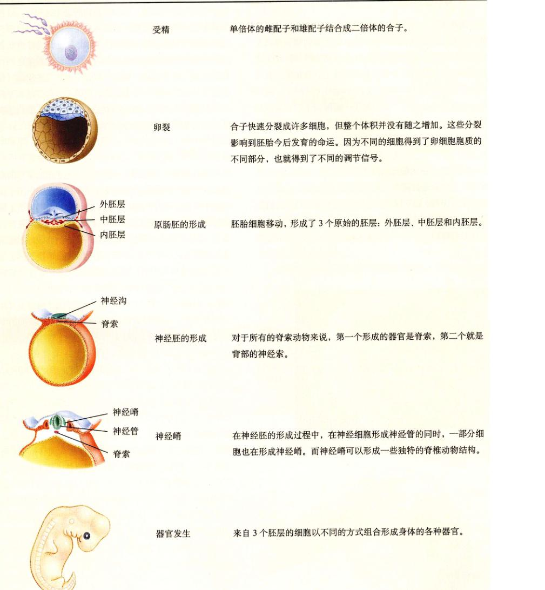
表 60.1 脊椎动物的发育阶段（哺乳动物）
- 受精：单倍体的雌配子和雄配子结合成二倍体的合子。
- 卵裂：合子快速分裂成许多细胞，但整个体积并没有随之增加。这些分裂影响到胚胎今后发育的命运。因为不同的细胞得到了卵细胞胞质的不同部分，也就得到了不同的调节信号。
- 原肠胚的形成：胚胎细胞移动，形成了3个原始的胚层：外胚层、中胚层和内胚层。
- 神经胚的形成：对于所有的脊索动物来说，第一个形成的器官是脊索，第二个就是背部的神经索。
- 神经嵴：在神经胚的形成过程中，在神经细胞形成神经管的同时，一部分细胞也在形成神经嵴。而神经嵴可以形成一些独特的脊椎动物结构。
- 器官发生：来自3个胚层的细胞以不同的方式组合形成身体的各种器官。
Page 6 / 1176
称为植物极（vegetal pole），而含卵黄相对较少的一极则称为动物极（animal pole）（图 60.7）。
3) 爬行类和鸟类
爬行类、鸟类和某些种类的鱼所产的卵几乎都是卵黄，只有少量的胞质集中在一极。这些卵的卵裂仅仅发生在胞质所在极的小小的圆盘状区域，称为胚盘（blastodisc）。胚盘位于很大的卵黄球上。这种卵裂方式称为不完全卵裂（meroblastic cleavage）（图 60.8）。最终形成的胚胎不是球形，而是戴了一顶薄帽子的卵黄球的形态。
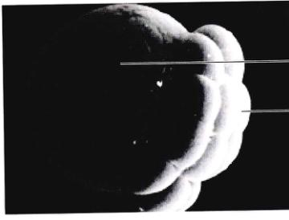
图 60.8 不完全卵裂（400×） 这种卵裂方式，卵细胞的一部分分裂形成细胞团。
4) 哺乳动物
哺乳动物是从爬行动物进化而来的，因此二者的卵在很多方面有着共同点，不同点在于前者的卵中只含有极少量的卵黄。由于哺乳动物的卵裂不会受到卵黄的阻碍，所以卵裂方式是完全卵裂，形成一个包围着囊胚腔的球形细胞团。但有一个内细胞团（inner cell mass）集中在一极（图 60.9）。这个结构类似于鸟类和爬行类的胚盘，它继续形成发育中的胚胎。组成外层球体的细胞叫做滋养层（trophoblast）。滋养层类似于组成爬行动物卵壳下面那层膜的细胞。在哺乳动物的进化过程中，这些细胞发生了很大的变化，从而有完全不同的功能。部分滋养层侵入母体子宫内膜（子宫的上皮组织），形成胎盘的一部分，而胎盘的作用是在胎儿和母体的血液之间完成营养和气体的交换。胎盘一部分是由胎儿的组织（滋养层）构成，一部分是由特化的母体子宫内膜组织（又叫底蜕膜 decidua basalis）构成。关于胎盘，我们还要在稍后的章节中详细讨论。
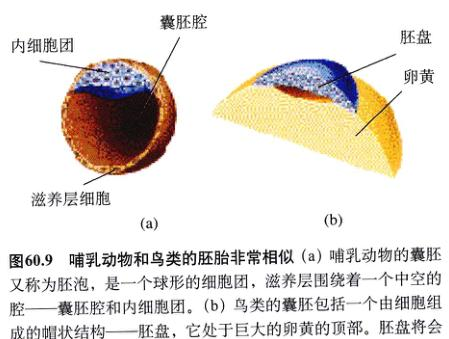
图 60.9 哺乳动物和鸟类的胚胎非常相似 (a) 哺乳动物的囊胚又称为胚泡，是一个球形的细胞团，滋养层围绕着一个中空的腔——囊胚腔和内细胞团。(b) 鸟类的囊胚包括一个由细胞组成的帽状结构——胚盘，它处于巨大的卵黄的顶部。胚盘将会形成上下两层，并在两层之间形成一个紧凑的囊胚腔。
5) 囊胚
从外观上看，囊胚像一个由相似细胞组成的简单的细胞球。对于许多动物来说，这是一种外观的假象。由于卵细胞中发育信号因子的不均匀分布，势必造成某种程度的镶嵌发育，以致细胞走上了完全不同的发育道路（见第17章）。但是对于哺乳动物而言，几乎所有的卵裂球都接受了同等数量的信号因子，而躯体的构建则是取决于细胞与细胞之间的相互作用。哺乳动物的囊胚，也称为胚泡（blastocyst），每个细胞和邻近的不同类型的细胞相互关联，而这些相邻细胞之间的相互作用正是影响每个细胞发育命运的主要因子。这种位置信息对于确立哺乳动物胚胎的方位尤其重要，它沿3个胚轴——前后轴、背腹轴和远近轴（proximal-distal）分别建立了不同的发育模式。
Page 7 / 1177
60.3 原肠胚期胚胎形成了3个胚层
60.3.1 原肠胚的形成过程
卵裂结束之后，可以看到的第一个直观的结果是胞质分布和细胞在囊胚腔中的位置。某些类群的细胞协调有序地从囊胚的表面内陷（invaginate）（向内凹陷）或内卷（involute）（向内翻卷），这一过程称为原肠胚形成（gastrulation）。原肠胚的形成决定了脊椎动物胚胎的基本发育模式。在原肠胚形成的末期，胚胎细胞重新排列，形成了3个原始的胚层（germ layers）：外胚层（ectoderm）、中胚层（mesoderm）和内胚层（endoderm）。每个胚层的细胞有着完全不同的发育命运。通常来讲，外胚层将会发育成上皮组织和神经组织，中胚层将会发育成结缔组织、肌肉、骨骼和血管，而内胚层将形成肠道及其衍生物（表 60.2）。
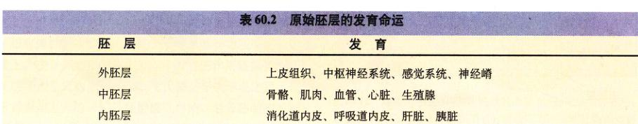
表 60.2 原始胚层的发育命运
外胚层: 上皮组织、中枢神经系统、感觉系统、神经嵴
中胚层: 骨骼、肌肉、血管、心脏、生殖腺
内胚层: 消化道内皮、呼吸道内皮、肝脏、胰脏
在原肠胚形成期间，将引起细胞发生怎样的移动？从表面上看，迁移细胞越过那些固定不动的细胞是借助于能改变其形状的肌动蛋白纤维的收缩，从而影响囊胚的内陷。每一个可以迁移的细胞拥有独特的细胞表面多糖成分。这些多糖可以与其他迁移细胞表面的类似的糖相互黏着。这种细胞表面分子之间的相互作用使迁移的细胞彼此粘连在一起，从而以一个细胞群单位而移动（见第7章）。
正如不同类群的脊椎动物的卵裂的方式在很大程度上取决于卵黄的数量及其在卵细胞中的分布一样，不同类群脊椎动物的原肠胚形成方式取决于卵裂期间产生的囊胚的形状。
1) 原始脊索动物的原肠胚的形成
对于像文昌鱼这样的原始脊索动物来讲，它们是由两侧对称的囊胚发育而来的，其原肠胚的形成起始于囊胚的表面向囊胚腔内部的凹陷。大约一半的囊胚细胞迁移至囊胚的内部，形成一个锯齿状的网球的结构。最后，内移的细胞到达囊胚的另一侧，然后停止迁移。最终形成的杯状的两胚层胚胎就是原肠胚（图 60.10）。由于细胞内陷而产生的中空的结构叫做原肠腔（archenteron），这就是消化道的雏形。原肠腔的开口，即未来的肛门，称为胚孔（blastopore）。这个过程形成了具有两层细胞的胚胎：外面的外胚层和内部的内胚层。之后不久，第三层细胞——中胚层——在内胚层和外胚层之间形成。
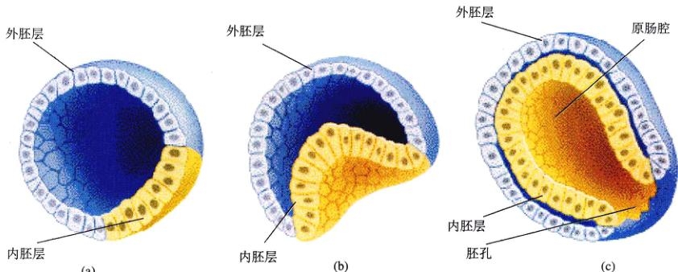
图 60.10 文昌鱼的原肠胚形成 这种脊索动物的内胚层是由囊胚表面的细胞内陷形成的(a,b)。这样就形成了原始的消化管，或原肠腔(c)。随后，从内胚层上脱离下来的体腔囊将形成中胚层。
Page 8 / 1178
2) 大多数水栖脊椎动物的原肠胚形成
在两栖类和多数水栖脊椎动物的囊胚中，卵黄分布不均匀，植物极富含卵黄的细胞与动物极缺乏卵黄的细胞相比，前者的数量较少，但细胞的体积大得多。因此，原肠胚的形成较文昌鱼复杂得多。首先，囊胚表面的一层细胞内陷形成一个较小的、新月形的裂缝，这就是后来胚孔形成的位置。紧接着，动物极的细胞向下迁移，沿着胚孔的背唇向内卷（图 60.11）。受精卵的灰色新月区即在相同的位置形成（图 60.4）。如同在文昌鱼中一样，内卷的细胞层最终紧贴着胚胎对侧细胞的内表面，把囊胚腔排挤出去，从而形成一个具有胚孔的原肠腔。然而，在这种情况下，胚孔被富含卵黄的细胞填充，形成一个卵黄栓（yolk plug）。经过这一系列的细胞迁移之后，位于外层的细胞形成外胚层，内层的细胞则形成内胚层。沿着胚孔背唇和腹唇卷入的其他细胞（胚孔的背唇和腹唇被胚孔塞分隔）在内胚层和外胚层间迁移形成第三个胚层——中胚层（图 60.11）。
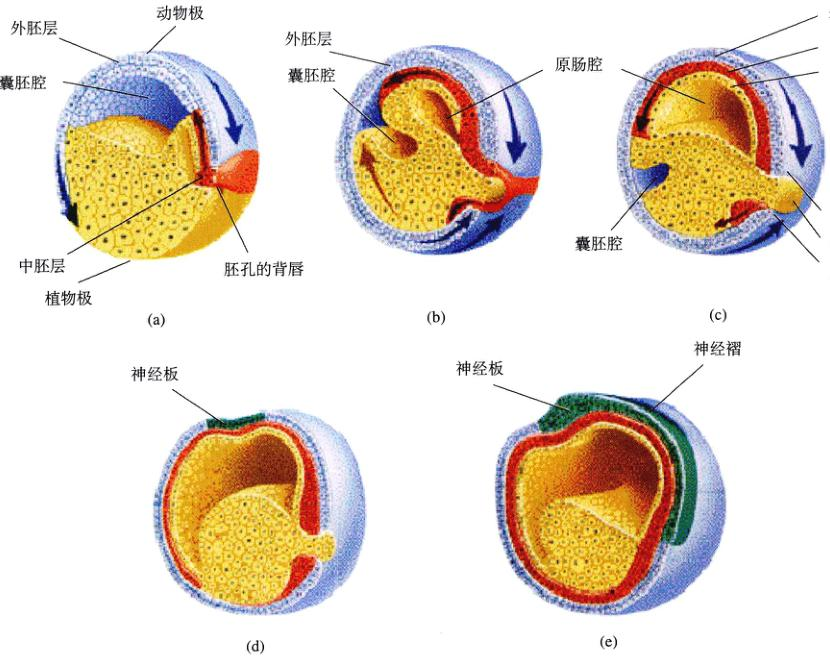
图 60.11 蛙类原肠胚的形成 (a) 动物极的细胞向植物极迁移，并最终沿着胚孔背唇内卷。(b) 胚孔背唇区的细胞内卷进入内腔（或囊胚腔），最终紧贴在远端的壁上。原始的3个胚层（外胚层、中胚层和内胚层）已明显可辨。外胚层用蓝色表示，中胚层用红色表示，内胚层则用黄色表示。(c) 胚孔背唇细胞的运动产生了一个新的内腔——原肠腔，并取代了囊胚腔。(d) 不久，外胚层形成神经板。(e) 接着将形成神经沟，然后是神经管，这时胚胎进入了神经胚形成阶段。神经外胚层的细胞用绿色表示。
3) 爬行类、鸟类和哺乳动物的原肠胚形成
对于鸟类、爬行类的胚盘和哺乳动物的内细胞团来说，发育中的胚胎只是细胞组成的帽状结构，而不是一个细胞球。没有卵黄把胚胎从两侧分开。因此，下层的细胞可以直接分化为内胚层，上层的细胞则分化为外胚层，而无需细胞的迁移运动。当内、外胚层形成之后，中胚层马上由上层的细胞以内卷或内陷的方式形成。表面的细胞开始移向中线并内卷，再向两侧迁移，在内外胚层之间形成中胚层。
Page 9 / 1179
沿着胚胎纵向中线的沟标志着内卷的位置（图 60.12 和图 60.13）。这条沟类似于一个延长的胚孔，特称为原条（primitive streak）。
60.4 在胚胎发育的下一个阶段，躯体结构的构建就已经被决定了
60.4.1 神经胚的形成过程
在脊椎动物发育的下一个阶段，3个胚层开始转化成身体的各种组织和器官。组织分化的过程起始于两个只存在于脊索动物的形态学特征——脊索（notochord）和中空的背神经索（dorsal nerve cord）。背神经索的发育过程称为神经胚的形成（neurulation）。
原肠胚形成后不久，第一个可见的结构就是脊索，它是由沿着胚胎的背中线排列的中胚层形成的。脊索是一根有弹性的棒状结构，位于所有脊索动物胚胎的背中线上。在脊椎动物的进化过程中，它的作用逐渐被由中胚层细胞形成的分节的脊柱所代替。脊索形成之后，位于脊索正上方的一层外胚层细胞内陷，沿着胚胎的长轴形成一条较长的褶皱，特称为神经沟（neural groove）。神经沟的边缘彼此相互靠拢并愈合在一起，形成一条中空的神经管（neural tube）（图 60.14）。神经管位于胚胎的背部表皮之下，将来分化成为脊髓和脑。
胚孔的背唇可以诱导脊索的形成，而脊索的出现又进一步诱导其上方的外胚层分化为神经管。通过改变其发育的路径，胚胎某一个区域的细胞影响邻近区域的胚胎细胞的发育过程，有关这个诱导的过程已经在第17章讨论过了，但在下一章节我们还将作进一步的讨论。
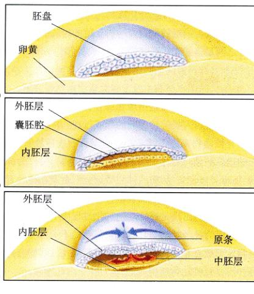
图 60.12 鸟类原肠胚的形成 胚盘的上层 (a) 分化成为外胚层，胚盘的下层则分化成为内胚层 (b)，通过背部原条内迁的细胞将会发育成中胚层细胞 (c)。
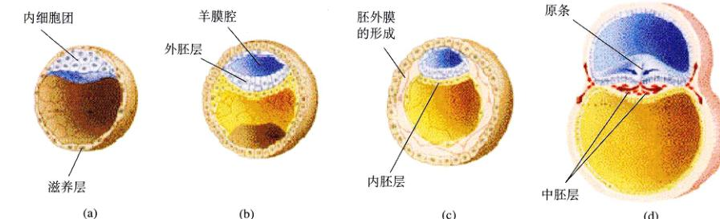
图 60.13 哺乳动物原肠胚的形成 (a) 羊膜腔在内细胞团和它的基底之间形成。(b), (c) 内胚层和外胚层的分化类似于鸟类胚盘的分化。(d) 原条的发育通过原条，那些预定发育成中胚层的细胞内移，与鸟类原肠胚的形成过程类似。与此同时，滋养层开始更加远离胚胎，在胎盘形成过程中发挥作用。
Page 10 / 1180
在胚胎的外胚层形成神经管的同时，躯体的其他基本结构也多由中胚层迅速分化形成。在发育中的脊索的两侧，中胚层组织块形成了体节（somite）。随着发育的继续，更多的体节加入其中。最终，体节形成了肌肉组织、脊柱和结缔组织。然而，头区的中胚层并不分化成彼此分离的体节，而是继续保持彼此连接成体节球（somitomeres）的形式，并形成面部、上下颌和咽喉的横纹肌。某些躯体组织，包括肾脏、肾上腺和生殖腺（性腺），是由另一群中胚层细胞发育形成的，这些细胞沿着体节的两侧分布。余下的中胚层细胞迁移出来，并且围绕在内胚层的四周，最后把内胚层完全包围。这种运动的结果，使中胚层细胞分化成为两层：外层的细胞参与体壁的形成，内层的细胞参与消化道的组成。在两层中胚层之间是体腔（见第45章），将来发育成成体的体腔。
1) 神经嵴
神经胚的形成过程出现在所有脊索动物的发育过程中，文昌鱼与人类的神经胚的形成过程非常相似。然而对于脊椎动物来说，就在神经沟闭合形成神经管之前，它的边缘皱缩，形成了细条形的一层细胞，特称为神经嵴（neural crest）。两侧的神经嵴细胞汇合罩在神经管的上方（图 60.14）。神经嵴细胞将移至发育中的胚胎的侧面。神经嵴的出现是脊椎动物进化过程中一个关键性的事件，因为神经嵴细胞在迁移至胚胎的不同部分后，最终发育成脊椎动物身体的各种特征结构（尽管有些特征并不是脊椎动物所特有的）。
神经嵴细胞的分化方向取决于它们在胚胎中所处的位置。在胚胎的前端，它们与脑的前部——前脑（forebrain）——愈合。周围的外胚层细胞群和神经嵴细胞愈合增厚，形成基板（placode）。尽管它们起源于极其相似的细胞间相互作用，但这个基板完全不同于神经嵴细胞。基板将发育成头部感觉器官的一部分。神经嵴细胞和与之相连的基板以两条侧带的形式呈现，这也就是为什么由这群细胞形成的脊椎动物的感觉器官总是成对出现的原因。
那些位于胚胎后段的神经嵴细胞则有着完全不同的发育命运。这些细胞从神经管处迁移出去，定位在头部和身体的其他部位，将形成神经营和周围组织之间的联系。在这些新的部位，它们将参与各种不同结构的发育过程，尤其是那些脊椎动物特有的结构特征，有些特征将在后续段落中详细讨论。
2) 鳃室
原始的脊索动物（如文昌鱼）是滤食者，通过快速摆动纤毛驱动水流经咽部的裂缝进入体内。这些咽鳃裂（pharyngeal slit）将进化为脊椎动物的鳃室（gill chamber）——这一结构提供了一种效率极高的呼吸方式。在动物的取食方式由滤食型转变为主动捕食型的过程中，鳃室的进化无疑是其中一个重要事件。
在脊椎动物鳃室的发育过程中，某些神经嵴细胞在胚胎咽鳃裂之间形成了软骨棒（cartilaginous bar），而其他的神经嵴细胞则诱导部分中胚层细胞沿着软骨形成肌肉组织，仍有其他一些神经嵴细胞形成神经元，在神经索和肌肉组织间传递神经冲动。一条被称为主动脉弓（aortic arch）的大血管穿过胚胎的每一条胚胎棒（embryonic bar）。更多的神经嵴细胞呈线状排列，这些棒状结构具有内部血液供应，其末端高度分支，最终形成成年个体的鳃。
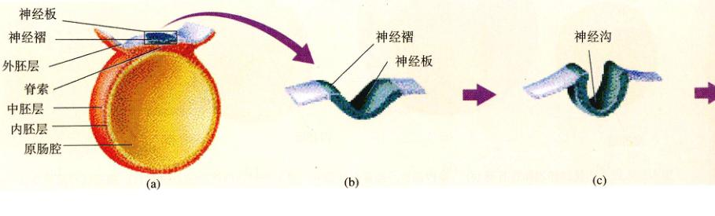
图 60.14 哺乳动物神经管的形成 (a) 神经管在脊索的上方形成，(b) 神经板折叠，(c) 形成神经沟。
Page 11 / 1181
由于鳃室中坚硬的软骨棒受由神经控制的肌肉组织的牵引而向内弯曲，整个结构就是一个高效的泵，它能驱动水流经过鳃部。而鳃在这里扮演的则是一个高效率的氧气交换器的角色，它使那些用鳃呼吸的动物大大地提高了呼吸的效率。
3) 神经系统精细结构的形成
一些神经嵴细胞向着脊索的腹侧迁移，并最终在背根神经节形成感觉神经元（详见第54章）。其他的神经嵴细胞特化成施旺细胞，施旺细胞可以使神经纤维绝缘，从而实现了神经冲动的快速传导。其他的细胞则形成自主神经节和肾上腺髓质。
4) 感觉器官与头骨
各式各样的感觉器官都是基板发育而成的。其中包括了嗅觉器官和在第55章详细讨论的侧线（原始的听器）。神经嵴细胞将参与牙齿的形成、部分头面部和颅骨的形成。
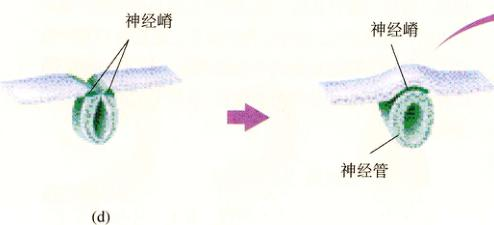
图 60.14 哺乳动物神经管的形成（续） (d) 神经沟最终封闭，形成一个中空的管。(e) 随着神经管的成功闭合，神经管背部边缘的一些细胞分化形成神经嵴，这是脊椎动物所特有的结构。
60.4.2 发育过程中细胞之间是如何传递信息的
在脊椎动物发育的过程中，特殊细胞层的相对位置在很大程度上决定了那些由它们形成的器官。至此为止，您可能会觉得奇怪，这些细胞是怎么知道它们是在哪里？举个例子：当处于正在发育着的脊索正上方的那些外胚层细胞发育形成神经沟的时候，这些细胞是怎样知道它们正好处于脊索的上方？
这个问题的解决是试验胚胎生物学最杰出的成就之一。试验胚胎生物学是研究胚胎如何形成的一门科学。伟大的德国生物学家 Hans Spemann 和他的学生 Hilde Mangold 早在20世纪的早期就解决了这个问题。在研究过程中，他们从一个两栖类囊胚的背唇上移去一部分细胞，并把它们植入另一个囊胚的不同的部位（图 60.15）。两栖类动物囊胚的背唇区是由胚胎的灰色新月区发育而来，而且是将来发育成脊索的中胚层细胞的发源地。植入的新位置是将来发育成动物腹部的区域。结果会怎样？胚胎发育形成了两条脊索，一条是正常的，位于胚胎的背部，而另一条位于胚胎的腹部。
应用遗传性状不同的受体与供体囊胚，Spemann 和 Mangold 的实验清楚地显示，由移植背唇细胞形成的脊索同时包含了宿主细胞和移植细胞。在这里，移植的背唇细胞扮演了一个脊索发育的组织者（organizer）的角色（详见第17章）。同样，这些移植的细胞在植入胚胎的腹区刺激并启动了一个发育程序，即脊索的发育。很明显，腹部的细胞的确含有这种发育的程序，但在正常的发育过程中，这个程序不被表达。而移植的背唇细胞则诱导了这个程序。这些细胞的确能诱导腹部的外胚层细胞分化形成脊索。这种现象称为诱导作用（induction）。
Spemann 所发现的诱导作用过程显然是脊椎动物发育的一个基本模式。3个原始的组织——外胚层、中胚层
Page 12 / 1182
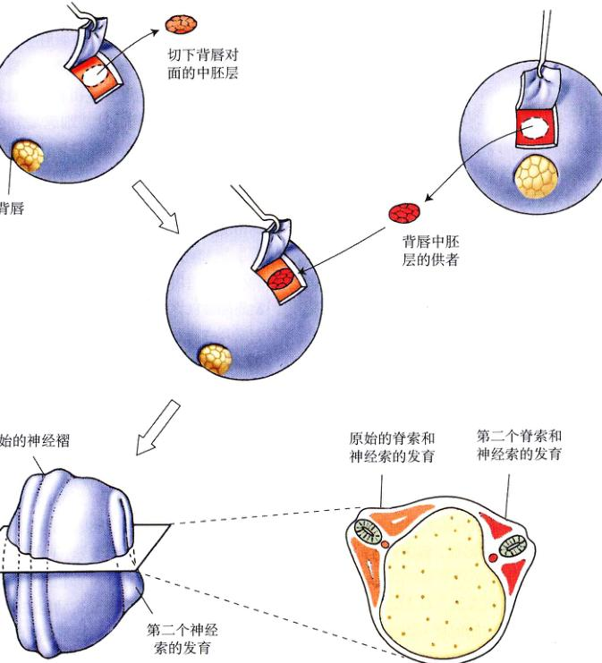
图 60.15 Spemann 和 Mangold 的胚胎背唇移植试验
和内胚层——之间的诱导作用被称为初级诱导（primary induction）作用。而在那些已经分化了的组织之间发生的诱导作用则被称为次级诱导（secondary induction）作用。在神经胚的形成过程中，中枢神经系统的分化，即通过背部外胚层和中胚层之间的相互作用而形成了神经管，就是初级诱导作用的一个例子。相反，外胚层来源的眼的晶状体与中枢神经组织相互作用，从而产生了脊椎动物眼的晶状体的分化，这是次级诱导作用的例子。
眼睛的发育始于前脑的延伸，一个柄状的结构向外生长，直至与外表皮相接触（图 60.16）。与生长的视柄（optic stalks）正对的外表皮向内凹陷，形成了一个透明的晶状体。Spemann 这个关键性的实验显示，当两只眼睛的视柄刚刚开始从大脑凸出，晶状体还没形成的时候，将其中一个发育中的视柄芽（budding stalk）移植到其他部位的表皮之下，如腹部的表皮之下，仍然可以形成一个晶状体。不过，其形成部位却是在移植了视柄芽的腹部表皮区域。
那么，这些从一个组织传向另一个组织的诱导信号的本质又是什么呢？如果在诱导者和靶组织之间加一层无孔的屏障，如一层玻璃纸，那么就不会发生诱导作用。相反，若加一层有孔的、蛋白质可以通过的滤膜，诱导作用照样可以发生。诱导过程的细节已经在第17章讨论过了。简而言之，就是诱导细胞产生一种蛋白质因子，这种因子与靶组织的细胞相结合，从而引起基因表达的变化。
发育决定的本质
组成身体的所有类型的细胞，除去一小部分特化的细胞在发育的过程中失去了细胞核之外，都有全套互补的遗传信息。尽管身体的所有细胞在遗传学意义上是等同的，但一个成年的脊椎动物拥有数百种不同的细胞类型，每一种都独立表达整个基因组的不同方面。
Page 13 / 1183
是什么因子决定了哪些基因在哪种特定的细胞中表达，又有哪些基因不表达？在肝细胞中，是什么机制保证基因组储存的遗传信息中属于特定的神经细胞特征的那部分处于关闭状态？如果一种特殊的细胞将分化成肝细胞，那么这会导致基因组中其他细胞种类的遗传信息的物理丢失吗？不会。这些细胞会在分化的过程中逐渐丢失表达基因组中大部分基因的能力。发育的过程就是一个逐渐限制基因表达的过程。
有些细胞在发育的过程中很早就决定了（determined）分化的方向。例如，女性体内所有的卵细胞在胚胎发育的早期就已经预留出来了，尽管这些细胞中的大部分在今后40多年的时间内都不会发育成成熟的、有功能的卵母细胞。一个细胞在发育中的胚胎中的位置在很大程度上决定了它的发育命运。通过改变一个细胞的位置，研究人员就可以改变它的发育命运。但是，这个结论只有在细胞发育的某个时段是正确的。而在某些阶段，每个细胞的最终命运已经确定了，这个过程称为定向（commitment）。定向并非不可逆的，例如一个完整的个体可以从一个特化的细胞克隆获得，就像我们在第17章叙述的一样，但是，这在正常的情况下极为罕见。
60.4.3 胚胎发育与脊椎动物进化之间的联系
那些最终进化成脊椎动物的原始的脊索动物是一群行动缓慢、滤食性的动物，而且它们的代谢速率相对较低。脊椎动物许多特有的适应性使其发挥了多种生态学功能，这些适应性都与由神经嵴细胞发育而来的结构有关。脊椎动物变成了具有很高代谢速率的、游泳迅速的捕食者；同时，加速的代谢能力导致了更高水平的活动能力，远比原始的脊索动物大得多。其他与神经嵴的衍生物有关的进化上的改变提供了更好的食物探测能力，大大改善了捕食过程中的定位能力以及对感觉信息的快速反应能力等。因此，神经嵴及其衍生结构的进化是脊椎动物进化过程中至关重要的步骤（图 60.17）。
个体发育史重演系统发育史
脊椎动物各类群发育的模式是：那些处于进化高级阶段的动物类群在很多方面反映了较低等类群的简单模式。因此，哺乳动物和鸟类的发育可以看成是爬行动物发育过程细节的重复，而爬行动物的发育过程则是两栖类发育过程的详尽重复，以此类推（图 60.18）。在哺乳动物的胚胎发育过程中，可以看见附肢的痕迹以及原始脊索动物的残余器官。例如，人类胚胎发育的某个阶段，仍然具有咽鳃裂，这一结构出现在所有脊索动物中并且和鱼类的鳃裂是同源的。在随后的阶段，人的胚胎也出现了尾。
在某种意义上，脊索动物各类群的发育模式建立在那些类群的进化历史的基础之上，是一个叠加的步骤。每个新类群的发育指令似乎可以看成是在先前的指令之上再叠加一层，从而产生了发育历程中的附加步骤。这种理论是19世纪的德国生物学家 Ernst Haeckel 提出的，也就是所谓的“生物发生律”（biogenic law）。这个理论通常表述为：个体发育史重演系统发育史（ontogeny recapitulates phylogeny）；也就是说，胚胎发育（个体发育）涉及了进化过程（系统发育）中出现的相同的变化过程。但是，如果用这种方式陈述，那么“生物发生律”并不是完全正确的，因为胚胎发育的过程并不是成体祖先的简单重现。
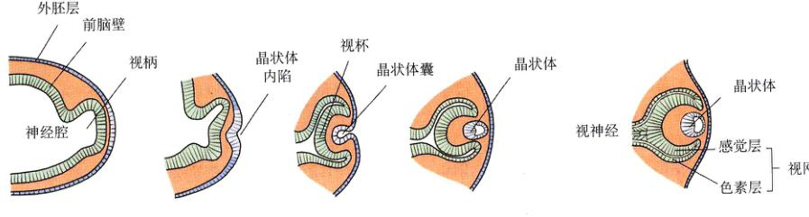
图 60.16 诱导作用导致眼睛的发育 视柄延伸生长直至与外胚层接触，诱导部分外胚层凹陷收缩形成晶状体。而眼睛的其他结构则是由视柄形成的。
Page 14 / 1184

图 60.17 各主要组织类型的来源 在原肠胚期形成的3个胚层产生了体内所有的器官和组织，但是外胚层来源的神经嵴细胞则形成诸如鳃弓和施旺细胞等在脊椎动物中普遍存在的结构。
但我们可以这样认为，某个特定类群的脊椎动物的胚胎发育过程经常反映了该类群祖先的胚胎发育过程中的某些阶段。因此，哺乳动物胚胎的咽鳃裂并不像其祖先的成体拥有的鳃裂，而是像它的祖先胚胎时期的咽鳃裂。
60.4.4 胚外膜
作为对陆地生活的适应，爬行类、鸟类和哺乳动物的胚胎在一个充满液体的羊膜（amniotic membrane）中发育（详见第48章）。羊膜和其他一些膜是由胚胎细胞形成的，但是它们位于胚胎的外部，因此，称为胚外膜（extraembryonic membrane）。胚外膜将来形成胎膜（fetal membrane），包括羊膜、绒毛膜、卵黄囊和尿囊。
鸟类的羊膜（amnion）和绒毛膜（chorion）是由两层褶生长，完全包围胚胎（图 60.19）形成的。羊膜是包围胚胎的内层膜结构，里面充满叫做羊水（amniotic fluid）的液体，用以模拟一个类似鱼类和两栖类发育的水环境。绒毛膜紧挨着卵壳，和其他的胚外膜之间通过一个腔隔开，这个腔称为胚外体腔（extraembryonic coelom）。卵黄囊（yolk sac）在为爬行类和鸟类胚胎提供营养方面起了重要的作用。在哺乳动物的胚胎中，卵黄囊仍然存在，尽管它不再起营养胚胎的作用。尿囊（allantois）是由内脏向外凸出形成的，其作用是储存鸟类的排泄物——尿酸。在发育的过程中，鸟类胚胎的尿囊延伸扩展形成一个囊状结构，最终和位于其上的绒毛膜在卵壳的下面融合在一起。尿囊和绒毛膜的融合形成了一个功能单位，在那里，进入尿囊的血管可以和多孔的卵壳之间完成气体交换。因此，尿囊成了鸟类胚胎的“肺”。
在哺乳动物中，胚细胞形成了内细胞团和外围细胞层，其中内细胞团会发育成胚胎的本体，外围细胞层特称为滋养层（trophoblast）（图 60.9）。滋养层植入母体子宫内膜并且形成绒毛膜（图 60.20）。绒毛膜的一部分和母体子宫内膜共同形成胎盘（placenta），这部分内容将在下一节详细讨论。哺乳动物的尿囊和血管参与脐带（umbilical cord）的形成，从而把胎儿的血液运送到胎盘。
Page 15 / 1185
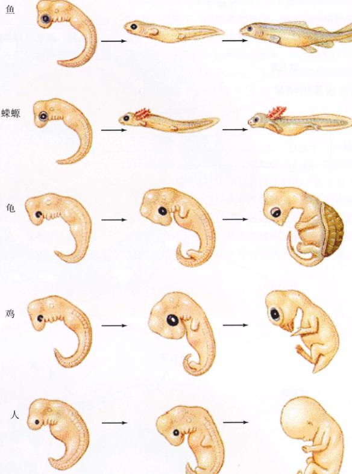
图 60.18 脊椎动物的胚胎发育过程 值得注意的是，这些脊椎动物胚胎发育的早期阶段彼此之间竟然惊人地相似，即使它们来源于完全不同的纲（鱼类、两栖类、爬行类、鸟类和哺乳动物）。所有脊椎动物的胚胎早期都有一个膨大的头部、鳃裂和一条尾巴，而不管这些特征在成体中是否保留。
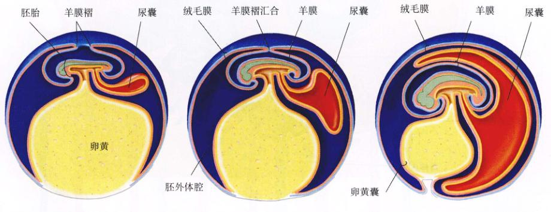
图 60.19 鸡胚的胚外膜 (a),(b) 由胚胎的羊膜折叠、愈合而形成胚外膜。(c) 形成了分离的羊膜和绒毛膜。尿囊继续生长，直到它最终和绒毛膜在卵壳的下方愈合在一起。
Page 16 / 1186
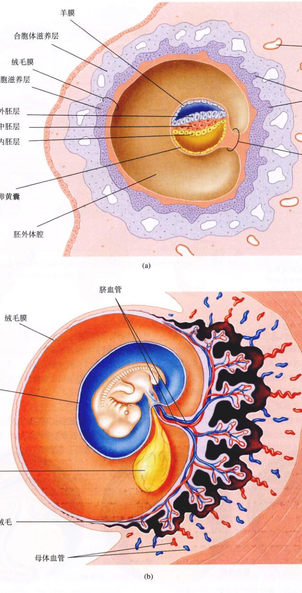
图 60.20 哺乳动物的胚外膜 (a) 在胚胎植入母体子宫内膜之后（受精之后的6~7天），滋养层变成绒毛膜，而且卵黄囊和尿囊也形成了。(b) 绒毛膜长出许多绒毛，与周围的子宫内膜组织相互交织在一起。这时的胚胎被包裹在羊膜腔中。
Page 17 / 1187
进行气体交换。
60.5 人的胚胎发育过程分为3个妊娠三月期
60.5.1 妊娠首三月期
人的胚胎发育过程显示了它的进化起源。如果不从进化论的观点出发，我们无法解释为什么人的发育过程与鸟的发育过程有如此多的相似之处。鸟类和人的胚胎发育都是从一个扁平的细胞群开始的——在鸟类是胚盘，在人类则是内细胞团。但是，鸟类胚胎的胚盘是扁平的，因为它受到了一团卵黄的挤压；而人的卵细胞中尽管缺乏卵黄，但其胚胎的内细胞团也是扁平的。无论人类还是鸟类，在胚胎时期都形成原条，并且都形成3个胚层。
人的发育，从受精到出生，平均大约需要266天。这个发育过程通常分成3个时期，叫做妊娠三月期（trimesters）。
1) 第1个月
受精之后大约30h，受精卵进行第一次卵裂；大约30h之后进行第二次卵裂。胚胎到达子宫之时（受精后的第6~7天），已经发育成囊胚了，哺乳动物称为胚泡（blastocyst）。如前所述，胚泡包括将来发育成胚胎本体的内细胞团和包裹在胚泡外围的滋养细胞层（图 60.9）。胚泡开始快速生长，并开始形成羊膜和绒毛膜。胚泡消...
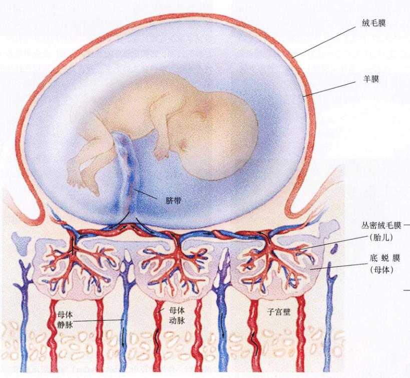
图 60.21 胎盘的结构 胎盘由两部分组成：胎儿部分的丛密绒毛膜和母体部分的底蜕膜。缺氧的胎儿血液从脐动脉（用蓝色表示）流入胎盘，在那里血液和母体血液交换，携带上氧气和营养物质，而后，含氧的胎儿血液从脐静脉（用红色表示）流回胎儿。
Page 18 / 1188
化周围组织进入子宫内膜的过程称为植入（implantation）。
在受精后的第2周里，发育中的绒毛膜形成许多分支状的突起，称为丛密绒毛膜（chorionic frondosum）（胎盘的胎儿部），绒毛膜突起进入母体子宫内膜（图 60.21）。这些绒毛膜的突起诱导周围的子宫内膜组织发生变化，形成底蜕膜（decidua basalis）（胎盘的母体部）。二者结合在一起，绒毛膜和底蜕膜形成一个单独的功能单位——胎盘（placenta）（图 60.22）。在胎盘的内部，母亲的血液和胚胎的血液彼此靠近，但并不混合（图 60.21）。氧气可以从母亲的血液扩散到胚胎，而二氧化碳则会向相反的方向扩散。除了气体交换的功能之外，胎盘还有为胚胎提供营养，解毒以防止某些物质分子进入胚胎的血液循环，以及分泌激素的功能。某些物质，像乙醇、药物（包括毒品）和抗生素，则不会被胎盘阻挡，而是经过母体的血流进入胎儿的体内。
胎盘所释放的激素之一是人绒毛膜促性腺激素（hCG），关于这种激素曾在第59章讨论过。这种激素是由滋养层细胞释放的，甚至在它们形成绒毛膜之前就已经分泌了，这种激素可作为检测怀孕的指标。因为它的作用和黄体生成素（LH）几乎是一样的，hCG可以维持母体黄体的存在。反过来，黄体又继续分泌雌二醇和孕酮，从而阻止月经周期的进行和进一步的排卵。
原肠胚的形成也在受精后的第2周内发生，在胚胎的表面可以看见原条，3个胚层（外胚层、中胚层和内胚层）已经分化形成。
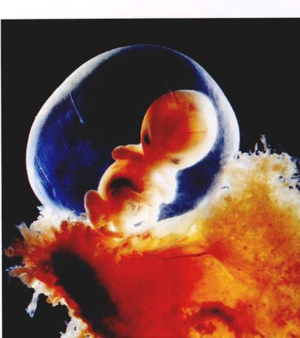
图 60.22 第7周的胎盘和胎儿
在第3周里，神经胚形成。这个时期的标志是沿着胚胎背部的纵轴形成了神经管，同时出现了最初的体节。这些体节将会形成肌肉、椎骨和结缔组织。到第3周末，明显可见体节超过了12节，而且血管和内脏也开始发育。这时的胚胎的长度大约2mm。
器官发生（身体各器官的形成）在第4周时开始（图 60.23a）。眼睛形成了。同时，管状的心脏开始发育形成4个心室，并开始有节律地搏动，就像它在个体生命的其余日子里那样搏动。若每分钟心脏搏动70次，则在70年中，心脏大概要搏动25亿次。在第4周末，我们大约可以看见超过30节的体节，这时上肢和下肢的枝芽开始形成。此时的胚胎大约有5mm长。尽管这时发育的程序早就已经开始了，但很多女性并没有察觉，虽然她们已经怀孕了。
怀孕的早期是发育过程非常重要、关键的时期，因为在这个时期，发育的预定事件很容易被干扰。例如，在20世纪60年代，许多怀孕的女性在怀孕的早期服用镇静剂以减少妊娠反应。不幸的是，这种药品并没有经过足够的检测。它阻止枝芽的发育，它的广泛应用导致了许多残疾、畸形婴儿的出生。器官发生也可以在怀孕的第1个月和第2个月被阻断，其原因是母亲感染了风疹（德国风疹）。绝大部分的自然流产都是在这一个时期发生的。
2) 第2个月
形态发生（胚胎外形状的形成）在妊娠期的第2个月开始（图 60.23）。通过这时胚胎肢体的缩影模型，我们已经可以设想它成年个体的形状。手臂、腿、膝关节、肘关节、手指和脚趾在这时都可以看见，还可以看见一条瘦骨嶙峋的、多骨节的尾！胚胎尾部的骨骼是我们过去进化的残留痕迹，在发育的后期将愈合形成尾骨。在腹腔的内部，各主要器官，包括肝脏、胰腺和胆囊，都变得清晰可见。到妊娠期第2个月末，胚胎的长度大约25mm，重1g，并且看上去已经十分像人了。
3) 第3个月
神经系统和感觉器官在妊娠期的第3个月开始发育，而且在这个阶段上肢和下肢可以开始运动（图 60.23c）。这时的胚胎开始表现出一些面部的表情，并且有了最初的反射，像惊跳反射（startle reflex）和吮吸反射等。妊娠第8周的明显标志是从胚胎到胎儿的转变。在这一时期，身体的主要器官都已经建立起来。发育过程的剩余...
Page 19 / 1189
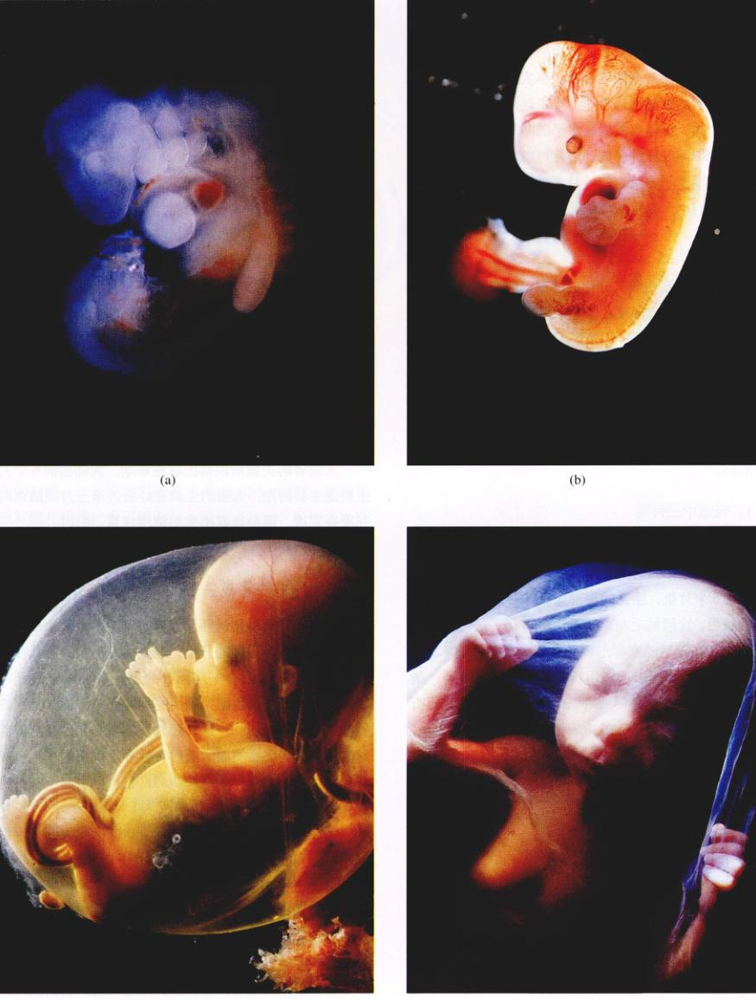
图 60.23 发育中的人的胚胎 (a) 4周的胚胎。(b) 7周的胚胎。(c) 3个月的胚胎。(d) 4个月的胚胎。
Page 20 / 1190
工作本质上就是生长了。
在第10周左右，由胎盘分泌的人绒毛膜促性腺激素（hCG）的分泌量开始下降，其结果是黄体开始萎缩。但是月经周期并没有重新开始，因为胎盘自己开始分泌雌二醇和孕酮两种激素（图 60.24）。事实上，由胎盘分泌的这两种激素的数量远远超过卵巢中这两种激素的分泌量。怀孕期间，母体血液内高水平的雌二醇和孕酮可以继续抑制FSH和LH的释放，因此可以阻止排卵。这些激素同样有助于子宫状态的维持并最终使子宫为分娩做好准备。它们也可以刺激乳腺的发育，为分娩后的哺乳做好准备。
60.5.2 妊娠中三月期和妊娠末三月期
妊娠的第2个三月期和第3个三月期的主要特征是迅速的生长和发育，这些是婴儿出生后的生存发育能力所必需的。
1) 妊娠中三月期
在妊娠的第4个月里，骨骼开始积极地生长扩大（图 60.23(d)），到这个月月底，母亲就可以感觉到胎儿的运动。在第5个月里，胎儿的头部和身体开始覆盖上一层纤细的绒毛。这层绒毛叫做胎毛（lanugo），是进化的另一个痕迹，在随后的发育过程中又消失了。到妊娠期第5个月末，胎儿快速的心跳用听诊器就可以听得到，虽然这种心跳声早在第10周就可以用特殊的婴儿监听器听到。胎儿这时已经长到175mm长，质量大约为225g。
第6个月胚胎的生长很重要。到这个月的月底，婴儿的体重大约有600g（约合1.3磅），体长300mm（约合1英尺）。但是，婴儿出生前的大部分生长仍在进行当中。如果没有特殊的医疗护理，此时的婴儿离开母亲的子宫还是无法生存下去的。
2) 妊娠末三月期
妊娠的第3个三月期（the third trimester）是一个生长比发育更占优势的时期。胎儿的质量增加了几倍，但是生长并不是单纯的体积的增加。大脑中绝大多数神经束（nerve tract）和许多新的神经元都是在这个时期形成的。正在发育中的大脑，其制造神经元细胞的平均速度估计可以超过每分钟25万个！在第3个三月期末，当婴儿出生时，神经学意义上的生长还远远没有结束。如果胎儿继续留在母亲的子宫内，那么就会长得太大，以至于不能安全地通过母亲的骨盆。相反，只要婴儿的生存能力足够高就会降生，而他的大脑在出生后的几个月内继续发育并生成新的神经元。
60.5.3 分娩和出生后的发育
在某些哺乳动物的胚胎发育过程中，激素水平的改变将会诱发分娩过程的开始。这些哺乳动物的胎儿在它的肾上腺皮质内有一额外的细胞层，叫做胎儿区（fetal zone）。在出生前，胎儿的垂体分泌促肾上腺皮质激素（corticotrophin），这种激素会刺激胎儿区分泌类固醇激素。这些皮质类固醇随后将会导致母亲的子宫分泌前列腺素（prostaglandin），它可以引起子宫平滑肌有力地收缩。
人胚胎的肾上腺皮质没有胎儿区，因此人的分娩似乎并不是用这种机制引发的。人的子宫释放前列腺素，很有可能是由胎盘释放的高浓度的雌二醇引发的结果。雌二醇同样可以刺激子宫产生更多的催产素（oxytocin）受体，从而使其变得对催产素更加敏感。前列腺素会引起子宫的收缩；随后来自子宫的感觉反馈，还会刺激母体的垂体后叶释放催产素。前列腺素和催产素的共同作用会进一步刺激子宫的收缩，将婴儿往外推（图 60.25）。最初，每小时内只发生几次子宫收缩，后来，收缩的频率会增加至每2~3分钟收缩一次。最后，强劲的宫缩加上母亲的腹压，胎儿被产出，新生婴儿诞生了。
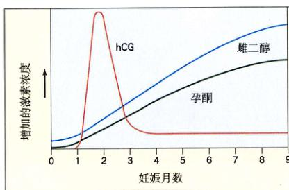
图 60.24 胎盘的激素分泌 胎盘分泌绒毛膜促性腺激素（hCG）的时间大约有10周，从那以后，胎盘的雌二醇和孕酮这两种激素的分泌量开始增加。
Page 21 / 1191
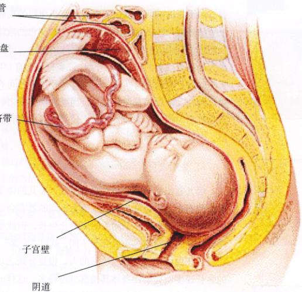
图 60.25 胎儿分娩前在母体中的位置 一个生长发育中的胎儿占据了母亲腹腔的大部分位置，是一个巨大的附加物。胃和肠道被挤到上面，所以来自下面的压力常使孕妇相当不舒服。在自然分娩的过程中，胎儿从阴道中被产出来，因此母亲的阴道必须能够最大限度地膨胀以便婴儿通过。
分娩结束后，子宫会继续收缩，排出胎盘和与之相连的胎膜，二者统称为胞衣（afterbirth）。这时，脐带仍然与婴儿相连，为了使新生儿能独立生活，医生或助产士夹住脐带并剪断它。血液凝固和脐带肌肉的收缩很快就可以防止过多失血。
1) 哺育后代
乳汁产生，或泌乳（lactation），是由乳腺腺泡（alveoli）完成的，当它们受到垂体前叶分泌的催乳素（prolactin）的刺激后，就会分泌乳汁。由腺泡产生的乳汁被分泌到一系列的被平滑肌环绕的囊泡状的管道中，一直通到乳头（图 60.26）。在怀孕期间，高水平的孕酮刺激了乳腺腺泡的发育，并且高水平的雌二醇刺激乳腺管的发育。但是，雌二醇阻止了催乳素对于乳腺的活化作用，并且它通过促使下丘脑分泌催乳素抑制激素来抑制催乳素的分泌。因此，在怀孕期间，尽管乳腺已经做好了哺乳准备，但此过程却受到激素抑制。
当分娩后，胎盘脱离母体，母体血液内的雌二醇和孕酮的浓度会迅速下降。这种体内激素水平的下降，使得垂体前叶分泌催乳素，从而刺激乳腺泡合成乳汁。由婴儿吮吸乳头引起的刺激会引发脑垂体后叶释放催产素（oxytocin）。催产素会刺激乳腺管周围平滑肌的收缩，从而将乳汁从乳房挤出。这个方式亦称为泌乳反射（milk ejection reflex）。哺乳期垂体后叶分泌的催产素也会引起子宫的收缩，就像分娩过程中的子宫收缩一样。这种收
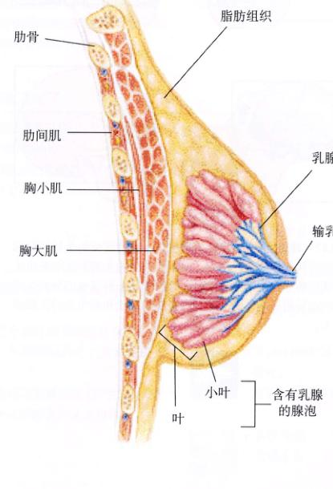
图 60.26 乳腺的纵剖面图 乳腺腺泡由于受到催乳素的刺激，产生乳汁。产生的乳汁又由于受到垂体后叶催产素的作用而从输乳管喷出。
Page 22 / 1192
缩有助于帮助哺乳期的母亲恢复子宫平滑肌的功能。
分娩后产生的最初的乳汁是一种微黄色的液体，称为初乳，其中含有丰富的营养和母体的抗体。母乳的合成大约是分娩后的第3天才开始。许多母亲哺育1年或更长的时间。在这段时间内，一种母亲和孩子之间的十分重要的相互依存关系建立起来。当哺乳期结束之后，乳汁在乳房内的积累会向大脑发出信号以终止催乳素的分泌，乳汁生产也停止了。
2) 生后发育（postnatal development）
婴儿在出生后还会继续迅速生长。婴儿的体重在出生后的两个月内会增长1倍。因为不同的器官会以不同的速度生长，也会在不同的时间终止生长，因此婴儿身体各部分的比例与成年人完全不同。就以“头部”为例，在新生儿中的比例是不成比例的大，但是分娩之后，它的生长速度明显要比身体其他部分慢得多。这样一种模式——身体的不同部分以不同的速度生长——叫做异速生长（allometric growth）。
多数哺乳动物的大脑生长是在胚胎期进行的。以黑猩猩为例，大脑和头骨的颅骨在出生后几乎不生长；而与此同时，颌骨却在继续生长。结果，一个成年黑猩猩的头骨与黑猩猩婴儿的头部看上去完全不一样（图 60.27）。而人的婴儿却正好相反，大脑、颅骨和颌骨以相同的速度生长。因此，颌一头骨所占的比例出生前后没有什么变化，而且成人的头部与婴儿的头部十分相似，没有什么差异。这似乎是人类早期胎儿和成年个体如此相像的首要原因。事实是，生后发育的最初几年时间里，人类的大脑可以继续显著地生长，这意味着适当的营养和一个富足、安全的环境对于个人智力潜能的完整发育是尤其重要的。
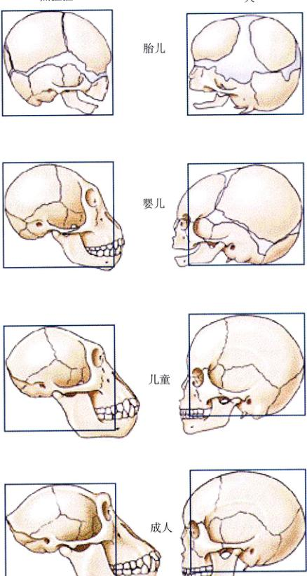
图 60.27 异速生长 幼年期的黑猩猩，它的颌骨的生长速度远比头部的其他部分快。结果，成年黑猩猩的头部形状与新出生的黑猩猩的形状差别极大。而人的颌骨与头部其他部分的生长速度的差异则很小，所以成人的头部的形状和新生儿的头部差别不大。
Page 23 / 1193
小结
60.1 受精是发育过程中的第一个重要事件
- 受精作用就是一个精子和一个卵子结合在一起，形成一个合子。绝大多数鱼类和两栖类动物行体外受精，而其他的所有的脊椎动物则行体内受精。
- 受精过程分为3个阶段：①精子的穿透作用；②卵子的激活；③核融合。
60.2 卵裂和囊胚的形成为后期的发育奠定了基础
- 卵裂的过程就是，刚刚形成的合子细胞快速分裂成一个细胞团，而整个个体体积却不随之增加。
- 卵裂的结果是形成一个中空的细胞球体，叫做囊胚。
60.3 原肠胚期胚胎形成了3个胚层
- 原肠胚形成期，细胞会改变它们的相对位置，形成三个原始的胚层：外胚层、中胚层和内胚层。
- 对于中黄卵和多黄卵来说，细胞下行内陷并且围绕卵黄，通过胚孔或原条形成3个胚层。
60.4 在胚胎发育的下一个阶段，躯体结构的构建就已经被决定了
- 神经胚的形成包括脊索的形成和背部中空的神经管的形成。
- 神经嵴的形成是脊椎动物发育过程中第一个独特的事件。绝大多数脊椎动物特有的结构都是由神经嵴分化形成的。
60.5 人的胚胎发育过程分为3个妊娠三月期
- 人发育的绝大部分至关重要的事件都在妊娠期的第1个月中发生。卵裂发生在第1周，原肠胚形成发生在第2周，神经胚的形成发生在第3周，而器官发生则发生在第4周。
- 在人胚胎发育的第2个月和第3个月中，进行的是形态发生，以及神经系统和感觉器官的精细加工。就在分娩前的6个月里，人的胎儿快速生长，大脑产生了大量的神经元，并确立了主要的神经束。
问题
- 受精作用的各个阶段都发生了什么事件？
- 完全卵裂和部分卵裂的差别是什么？为什么胚胎会有两种卵裂方式？
- 什么是原肠腔？它是在发育的哪个阶段形成的？对于脊椎动物而言，这个开口未来的发育命运是怎样的？
- 两栖类动物的原肠胚形成与文昌鱼的原肠胚形成有什么不同？
- 在神经胚的发育过程中，脊索动物形成了什么特有的结构？
- 鸟类和哺乳动物的羊膜、绒毛膜和尿囊各有什么作用？
- 在妊娠最初的2个月，胎盘如何抑制月经？
- 人妊娠的什么时候开始器官发生？
- 出生时，人的神经的生长发育完成了吗？
- 哪种激素可以刺激泌乳（产生乳汁）？什么激素可以刺激乳汁从乳房排出？